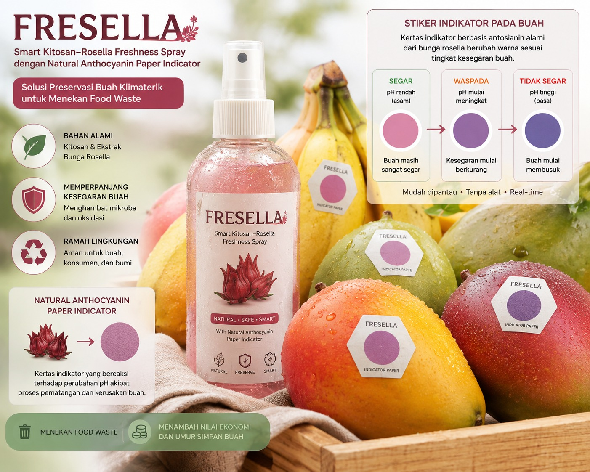

Integrated Preservation Platform
Smart Kitosan–Rosella Active System
Mengintegrasikan kontrol respirasi buah dengan formulasi kitosan presisi dan analisis spektrum warna indikator kertas antosianin berbasis Computer Vision.

Status Kamera
Standby
Akurasi Klasifikasi
96.8%
Waste Dicegah
3.4 kg
Batch Tersimpan
3Buah